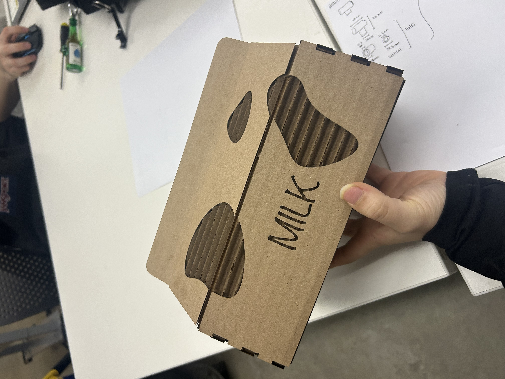
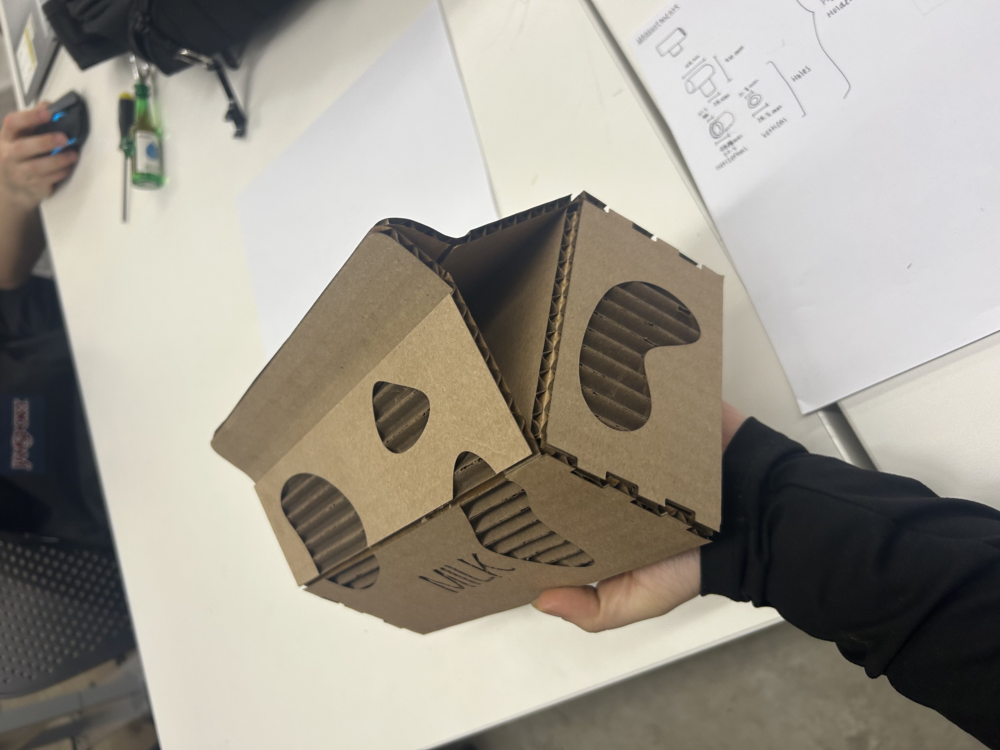
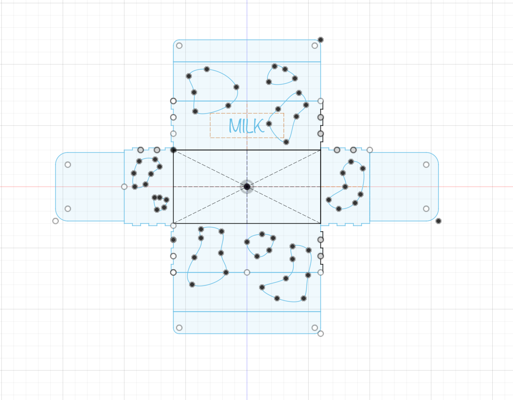
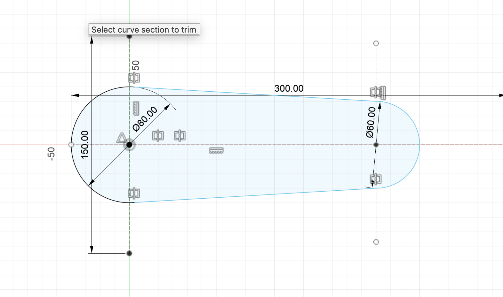
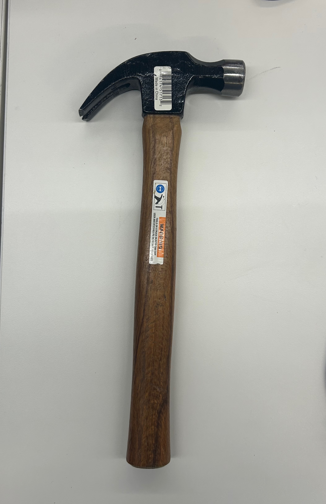
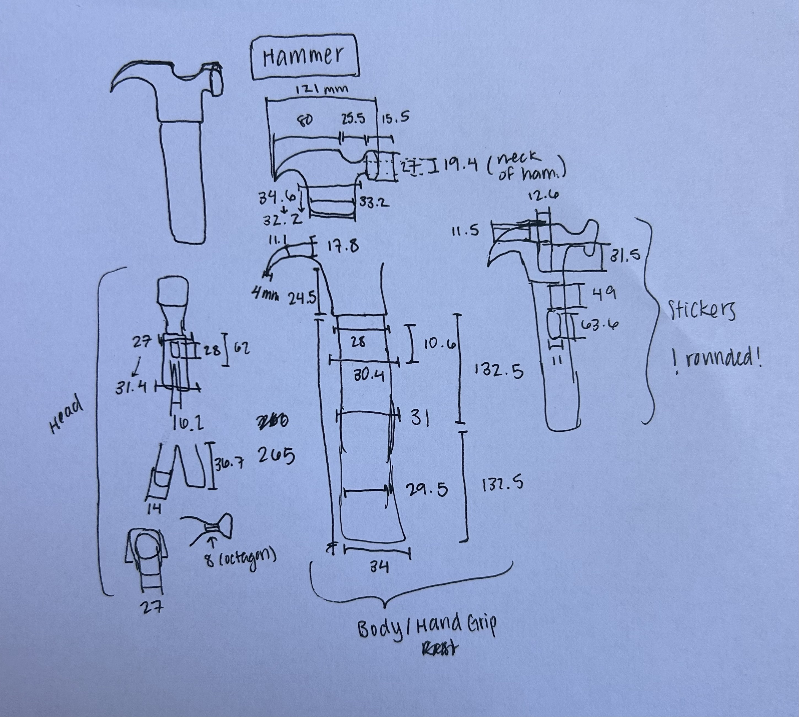
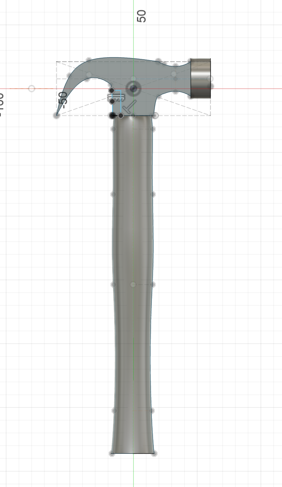
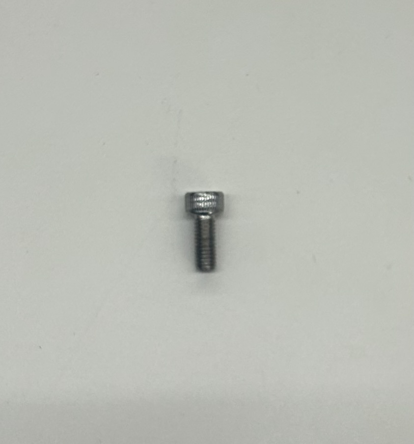
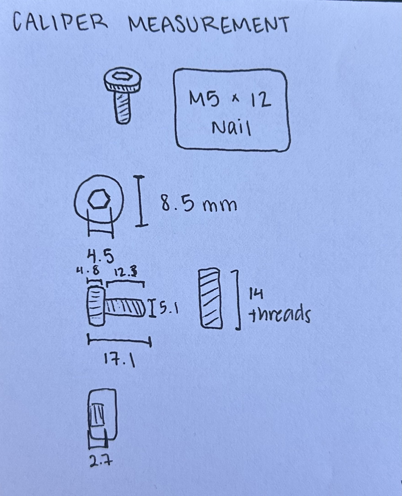
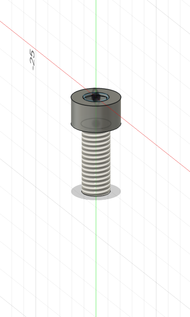

<div class="textcontainer">
<p class="margin"> </p>
<h3>Week 2: 2D Design & Cutting</h3>
<p class="margin"> </p>
<h4>Assignment 1: Make a Box</h4>
<p></p>
<p></p>
<p></p>
<p>I created a milk carton-shaped box for this assignment, inspired by a cute ceramic milk carton I have at home that holds flowers. I wanted to replicate that same charming vibe in cardboard form. I designed all the panels as a flat 2D layout in Fusion 360, then laser cut them from approximately 3.5mm cardboard. I used finger joints to connect the panels, since cardboard isn't well-suited to screws or other fasteners and finger joints keep everything aligned and sturdy without relying entirely on glue.</p>
<p>The main challenge was getting the top flap (the classic folded milk carton shape) to actually close. Cardboard is stiff and doesn't naturally want to fold into that shape, so I scored the fold lines shallowly with the laser cutter. This weakened the material just enough to allow a clean bend without cutting all the way through. I also added velcro strips to the inner faces of the opening so the flap snaps shut and holds that signature milk carton silhouette.</p>
<p>I had to scale the design down from my original plan due to the size of the available cardboard and the laser cutter bed, so it may not hold every lab material for the semester, but it gets high marks for cuteness! Once all the panels were cut, I assembled them using the finger joints and reinforced the key joints with a little hot glue to make sure everything held.</p>
<p class="margin"> </p>
<h4>Assignment 2: Fusion 360 Tutorial</h4>
<p></p>
<p>I followed the "Parametric 2D Sketching" tutorial from the course page, which walked through creating parametric sketches in Fusion 360. The exercise had me practice using the tools on Fusion 360, which helped me become more familiar with the software! You can find the link here: <a href="https://www.youtube.com/watch?v=vVFYrBClkPc">
Fusion 360 Tutorial for Beginners</a></p>
<p class="margin"> </p>
<h4>Assignment 3: Fusion Modeling</h4>
<p>For this part of the assignment, I selected two objects — a hammer and an M5 x 12mm bolt — measured them using calipers, modeled each one in Fusion 360, and combined them into a single assembly file.</p>
<h5>Hammer</h5>
<p></p>
<p></p>
<p></p>
<p>I measured the hammer with calipers, recording the handle length, handle diameter, head length, head width, and head height. </p>
<p>I built the model in Fusion 360 using a combination of sketches and extrusions, starting with the handle as a simple extruded profile and then modeling the head as a separate component. There were some challenges with curves around the stick to grip the hammer with, but I used free lines based on the measurements I had made and rotated them around to create the most accurate shape.</p>
<iframe src="https://college1051.autodesk360.com/shares/public/SH90d2dQT28d5b6028115fc72d52a3e5fe84?mode=embed" width="640" height="480" allowfullscreen="true" webkitallowfullscreen="true" mozallowfullscreen="true" frameborder="0"></iframe>
<h5>M5 x 12mm Bolt</h5>
<p></p>
<p></p>
<p></p>
<p>I measured the bolt with calipers, capturing the shaft diameter, head diameter, head height, and overall length.</p>
<p>I then used the Fusion tools I practiced from the tutorial video I watched to make the bolt on Fusion 360! In terms of particular tools, I used the built-in Thread feature to create the threads on the bolt, as you can see on the screenshot. I am not sure why it doesn't show up on the embedded STL file, so I might need to look into that again. </p>
<iframe src="https://college1051.autodesk360.com/shares/public/SH90d2dQT28d5b6028115e09dc31dd4be08c?mode=embed" width="640" height="480" allowfullscreen="true" webkitallowfullscreen="true" mozallowfullscreen="true" frameborder="0"></iframe>
</div>